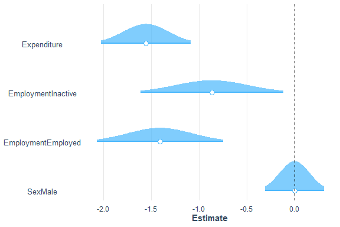
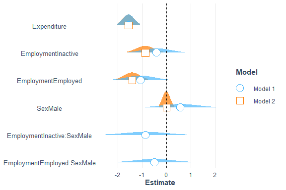
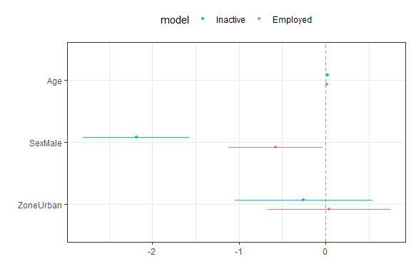

options(digits = 4)
library(tidyverse)
library(survey)
library(srvyr)
library(broom)
library(jtools)
survey_data <- readRDS("../Data/encuesta.rds")
data("BigCity", package = "TeachingSampling")
survey_design <- survey_data %>%
as_survey_design(
strata = Stratum,
ids = PSU,
weights = wk,
nest = TRUE
)
survey_design <- survey_design %>%
mutate(
poor = factor(
ifelse(Poverty != "NotPoor", 1, 0),
levels = c(0, 1),
labels = c("Not poor", "Poor")
),
unemployed = factor(ifelse(Employment == "Unemployed", 1, 0),
levels = c(0, 1),
labels = c("Not unemployed", "Unemployed")
)
)6 Modelos lineales generalizados
Nelder y Wedderburn (1972) introdujeron los modelos lineales generalizados como un marco capaz de integrar diversos métodos estadísticos ampliamente utilizados, como la regresión logística, los modelos log-lineales para datos de conteo y ciertos modelos avanzados de regresión para variables continuas. Posteriormente, McCullagh y Nelder (1989) sistematizaron esta formulación, que permitió extender las herramientas de regresión más allá de los escenarios en los que la variable respuesta sigue una distribución normal. Cuando la variable de interés no es continua o los supuestos del modelo lineal clásico no se satisfacen, los modelos lineales generalizados constituyen una alternativa adecuada para modelar las relaciones de interés.
La necesidad de esta generalización surge porque los modelos lineales clásicos asumen, entre otras cosas, normalidad y homogeneidad de varianza en la variable respuesta, condiciones que rara vez se cumplen cuando se analizan variables categóricas, proporciones o conteos. En este tipo de situaciones, los modelos lineales generalizados ofrecen un marco flexible para modelar adecuadamente la relación entre las variables mediante la selección de una distribución de probabilidad apropiada para la respuesta y una función de enlace que conecte la media de dicha distribución con el predictor lineal.
Para ilustrar los modelos presentados en este capítulo se utilizan la base de datos survey_data y la población BigCity, siguiendo la misma estructura utilizada en capítulos anteriores. Después de cargar tidyverse, survey, srvyr, broom y jtools, el siguiente bloque de código crea dos nuevas variables categóricas (poor y unemployed) a partir de las variables originales Poverty y Employment, respectivamente.
6.1 Modelo de regresión logística
De acuerdo con McCullagh y Nelder (1989) y Agresti (2019), cuando la variable de interés es dicotómica, tomando valores de cero o uno, el modelo lineal clásico no resulta adecuado debido a que puede generar predicciones fuera del intervalo \((0,1)\) y porque la varianza de la respuesta depende de su media. Para abordar estas limitaciones, el modelo de regresión logística constituye uno de los modelos lineales generalizados más utilizados para analizar variables binarias. En el contexto de encuestas de hogares, la regresión logística puede emplearse para analizar la asociación entre una condición de interés, como la pobreza, y características sociodemográficas de los individuos o los hogares.
Considere, una variable dicotómica \(Y_k \in \{0,1\}\), cuya esperanza es \(\theta_k=Pr(Y_k=1)\). El modelo de regresión logística relaciona dicha probabilidad con un conjunto de variables explicativas mediante la función de enlace logit, definida como
\[ \log\left(\frac{\theta_k}{1-\theta_k}\right) = \beta_0+\beta_1x_{k1}+\cdots+\beta_px_{kp} =\mathbf{x}_{k}\boldsymbol{\beta} \]
En donde \(\boldsymbol{\beta}\) es el vector de coeficientes de regresión asociado a las covariables. Esta transformación logit convierte el intervalo restringido de probabilidades \((0,1)\) en toda la recta real, permitiendo modelar la relación entre la respuesta y las variables auxiliares mediante un predictor lineal. De manera equivalente, la probabilidad de éxito puede expresarse mediante la siguiente relación:
\[ \theta_k = Pr(Y_k = 1 \mid \mathbf{x}_k) = \frac{\exp(\mathbf{x}_k\boldsymbol{\beta})} {1+\exp(\mathbf{x}_k\boldsymbol{\beta})} \]
De manera equivalente, la probabilidad de que la unidad no presente la característica de interés es \(Pr(Y_k = 0 \mid \mathbf{x}_k) = 1-\theta_k\). Bajo esta parametrización, cada coeficiente de \(\boldsymbol{\beta}\) representa el efecto de una covariable sobre el logaritmo de la razón de probabilidades de que ocurra el evento de interés, manteniendo constantes las demás variables del modelo. Según Heeringa et al. (2017), la estimación de los parámetros puede realizarse mediante el enfoque de pseudo-máxima verosimilitud. Este método incorpora los factores de expansión en la función de verosimilitud convencional con el fin de obtener estimadores consistentes respecto de la población objetivo. La función de pseudo-verosimilitud para el modelo logístico se define como
\[ PL(\boldsymbol{\beta}) = \prod_{k} \left[ \theta_{k}^{y_{k}} \left\{ 1-\theta_{k} \right\}^{1-y_{k}} \right]^{w_{k}} \]
En donde el subíndice \(k\) representa una unidad observada de la muestra. Asimismo, \(\theta_{k}\) denota la probabilidad de que la unidad \(k\) de la UPM \(i\) en el estrato \(h\) presente la característica de interés, \(y_{k}\) corresponde al valor observado de la variable dicotómica para dicha unidad y \(w_{k}\) representa el factor de expansión asociado a la observación.
La contribución de cada observación al proceso de estimación está determinada por su respectivo factor de expansión, permitiendo que la función refleje adecuadamente las características del diseño complejo de la encuesta. Dado que la maximización de la pseudo-verosimilitud resulta equivalente a maximizar su logaritmo, entonces el problema se reduce a optimizar la siguiente función:
\[ \ell(\boldsymbol{\beta}) = \sum_{k} w_{k} \left[ y_{k}\log(\theta_{k}) + (1-y_{k}) \log(1-\theta_{k}) \right] \]
Esta expresión constituye la función objetivo utilizada por los algoritmos de optimización numérica para obtener el estimador de los parámetros del modelo. Es importante señalar que la función anterior no corresponde a una verosimilitud en sentido estricto bajo el diseño complejo de la encuesta. Por esta razón, se utiliza el término pseudo-verosimilitud y los estimadores obtenidos mediante su maximización son conocidos como estimadores de pseudo-máxima verosimilitud (Pseudo Maximum Likelihood Estimators, PMLE).
De acuerdo con Molina y Skinner (1992) y Chambers y Skinner (2003), bajo condiciones de regularidad, estos estimadores son consistentes y asintóticamente normales, constituyendo la base de procedimientos de inferencia para el análisis de datos de encuestas complejas.
Como explica Binder (1983), una vez obtenidos los estimadores de pseudo-máxima verosimilitud, sus varianzas se estiman, mediante técnicas de linealización de Taylor, las cuales incorporan explícitamente las características del diseño complejo de muestreo. La matriz de varianzas y covarianzas de los parámetros estimados, denotada por \(\text{Var}(\hat{\boldsymbol{\beta}})=\boldsymbol{\Sigma}\), se obtiene a partir de una aproximación lineal de las ecuaciones de estimación alrededor del verdadero valor de los parámetros.
Esta matriz describe la precisión de los estimadores, ya que sus elementos diagonales corresponden a las varianzas de cada coeficiente, mientras que los elementos fuera de la diagonal representan las covarianzas entre pares de coeficientes. Su estimación constituye la base para el cálculo de errores estándar, la construcción de intervalos de confianza y la realización de pruebas de hipótesis sobre los parámetros del modelo.
Como los datos provienen de un diseño muestral complejo, es necesario incorporar adecuadamente las ponderaciones, la estratificación y la conglomeración para obtener estimadores consistentes de los parámetros y de sus errores estándar. En R, esta tarea puede realizarse mediante la función svyglm() del paquete survey, la cual extiende los modelos lineales generalizados al contexto de encuestas complejas.
Siguiendo con la encuesta de ejemplo, y con el fin de analizar los factores asociados a la condición de pobreza, se ajusta un modelo de regresión logística utilizando como variables explicativas el gasto, la situación en el empleo y el sexo. Dado que los datos provienen de una encuesta con diseño muestral complejo, la estimación se realiza mediante la función svyglm() del paquete survey, especificando family = binomial para indicar que la variable respuesta es dicotómica y que se utilizará la función de enlace logit. Los resultados del ajuste se presentan en la tabla 6.1.
logit_model <- svyglm(
formula = poor ~ Expenditure + Employment + Sex,
family = binomial,
design = survey_design
)En la especificación del modelo, el argumento formula = poor ~ Expenditure + Employment + Sex define la relación entre la variable respuesta poor y las covariables incluidas en el predictor lineal. Para las variables categóricas, la función genera automáticamente las variables indicadoras correspondientes y estima sus efectos con respecto a una categoría de referencia. Por su parte, el argumento design = survey_design incorpora la información del diseño muestral. El objeto resultante, logit_model, contiene los parámetros estimados, sus medidas de precisión y las estadísticas necesarias para realizar inferencia sobre la relación entre la condición de pobreza y las variables explicativas consideradas en el modelo.
Los resultados de la tabla 6.1 muestran las estimaciones de los coeficientes de regresión, junto con sus errores estándar, intervalos de confianza y valores-p. Del modelo se deduce que un mayor nivel de gasto se asocia con una menor probabilidad de encontrarse en condición de pobreza. Asimismo, en comparación con la categoría de referencia (desocupados), tanto las personas inactivas como las ocupadas presentan una menor propensión a ser pobres, siendo este efecto más marcado entre estas últimas. En contraste, el sexo tiene una influencia muy reducida sobre la probabilidad de pobreza una vez controlado el efecto de las demás covariables incluidas en el modelo.
logit_results %>%
as.data.frame() %>%
tibble::rownames_to_column("Parameter") %>%
tabla_fmt()| Parameter | term | estimate | std.error | statistic | p.value | conf.low | conf.high |
|---|---|---|---|---|---|---|---|
| 1 | (Intercept) | 2.1877 | 0.3731 | 5.863 | 0.0000 | 1.449 | 2.9269 |
| 2 | Expenditure | -0.0054 | 0.0008 | -6.497 | 0.0000 | -0.007 | -0.0038 |
| 3 | EmploymentInactive | -0.8634 | 0.3811 | -2.266 | 0.0253 | -1.618 | -0.1085 |
| 4 | EmploymentEmployed | -1.4069 | 0.3381 | -4.161 | 0.0001 | -2.077 | -0.7371 |
| 5 | SexMale | 0.0025 | 0.1573 | 0.016 | 0.9873 | -0.309 | 0.3141 |
La figura 6.1 presenta la distribución de los estimadores de los coeficientes de regresión. Se observa que, para todas las covariables excepto el sexo, los intervalos de confianza no incluyen el valor cero, lo que proporciona evidencia de una asociación estadísticamente significativa. En contraste, el intervalo de confianza asociado a la variable sexo contiene el valor cero, por lo que no se encuentra evidencia suficiente para concluir que esta variable tenga un efecto significativo una vez controladas las demás covariables incluidas en el modelo.
De acuerdo con Henry et al. (2024) y Long (2026), para visualizar la distribución de los coeficientes se emplea ggstance para la geometría horizontal de los intervalos, junto con plot_summs() del paquete jtools.
library(ggstance)
plot_summs(logit_model,
scale = TRUE,
plot.distributions = TRUE
)
El modelo puede ampliarse incorporando términos de interacción para evaluar si el efecto de una variable explicativa depende de los valores que toma otra. En este caso, se incluye una interacción entre el sexo y la situación laboral mediante el término Sex:Employment, con el objetivo de analizar si la relación entre el estado ocupacional y la probabilidad de pobreza es la misma para hombres y mujeres. Sin este término, el modelo asume que el efecto de la situación laboral sobre la pobreza es idéntico para ambos sexos. En cambio, al incorporar la interacción, se permite que dicho efecto varíe entre hombres y mujeres, capturando posibles diferencias en la forma en que la condición laboral se asocia con la pobreza en cada grupo. Los resultados del modelo ajustado se presentan en la tabla 6.2.
interaction_logit_model <- svyglm(
formula = poor ~ Expenditure + Employment + Sex + Sex:Employment,
family = binomial,
design = survey_design
)interaction_logit_results %>%
tabla_fmt()| term | estimate | std.error | statistic | p.value | conf.low | conf.high |
|---|---|---|---|---|---|---|
| (Intercept) | 1.7698 | 0.6103 | 2.8996 | 0.0045 | 0.5606 | 2.9790 |
| Expenditure | -0.0054 | 0.0008 | -6.4726 | 0.0000 | -0.0070 | -0.0037 |
| EmploymentInactive | -0.3952 | 0.5941 | -0.6652 | 0.5072 | -1.5721 | 0.7817 |
| EmploymentEmployed | -1.0593 | 0.5696 | -1.8599 | 0.0655 | -2.1877 | 0.0691 |
| SexMale | 0.5872 | 0.7479 | 0.7851 | 0.4340 | -0.8945 | 2.0689 |
| EmploymentInactive:SexMale | -0.8465 | 0.8600 | -0.9843 | 0.3271 | -2.5503 | 0.8573 |
| EmploymentEmployed:SexMale | -0.4812 | 0.7604 | -0.6328 | 0.5281 | -1.9878 | 1.0254 |
Al incorporar la interacción entre sexo y situación laboral, el gasto continúa mostrando una asociación negativa y estadísticamente significativa con la probabilidad de pobreza, manteniéndose como la covariable con mayor evidencia explicativa dentro del modelo. En contraste, los efectos principales de la situación laboral pierden importancia estadística una vez que se incluyen los términos de interacción, lo que sugiere una mayor incertidumbre en la estimación de sus efectos. Por su parte, ni el efecto principal del sexo ni los coeficientes asociados a las interacciones entre sexo y situación laboral resultan estadísticamente significativos al nivel del 5%. Estos resultados individuales no bastan para afirmar que la interacción no aporta información; esa conclusión requiere una prueba conjunta de los términos de interacción ajustada al diseño.
La figura 6.2 presenta una comparación de las estimaciones de los coeficientes y sus respectivos intervalos de confianza para los modelos con y sin interacción. Se observa que la incorporación de los términos de interacción incrementa la incertidumbre asociada a varios de los parámetros, lo que se refleja en intervalos de confianza más amplios. Asimismo, los coeficientes de interacción presentan estimaciones cercanas a cero y amplios intervalos de confianza que incluyen dicho valor, lo que coincide con la falta de evidencia estadística para concluir que el efecto de la situación laboral sobre la probabilidad de pobreza difiere entre hombres y mujeres.
plot_summs(interaction_logit_model, logit_model,
scale = TRUE,
plot.distributions = TRUE
)
6.2 Modelo de regresión multinomial
De acuerdo con McCullagh y Nelder (1989) y Agresti (2019), en las encuestas de hogares es frecuente encontrar variables de respuesta con más de dos categorías, como la situación laboral, cuyos posibles estados incluyen empleado, desempleado e inactivo. Cuando estas categorías son mutuamente excluyentes y no poseen un orden natural, la regresión logística multinomial ofrece una herramienta adecuada para modelar su relación con un conjunto de covariables y puede entenderse como una extensión de la regresión logística binaria.
Este modelo permite estimar la probabilidad de pertenecer a cada categoría de la variable respuesta en función de variables explicativas de naturaleza continua o categórica. Su aplicación requiere que las categorías de respuesta sean exhaustivas y mutuamente excluyentes y que no exista multicolinealidad severa entre las covariables. Además, para las covariables continuas, se asume una relación lineal entre estas y el logaritmo de las razones de probabilidades (log-odds) de cada categoría respecto a una categoría de referencia. El logit multinomial de categoría base también implica la independencia de alternativas irrelevantes, por lo que conviene valorar si ese supuesto es razonable para las categorías analizadas.
El modelo logístico multinomial especifica, la probabilidad \(\theta_{k(j)}\) de que la unidad \(k\) pertenezca a la categoría \(j\), con \(j=1,\ldots,J\), dado el vector de covariables \(\mathbf{x}_k\), mediante la siguiente expresión:
\[ Pr(Y_{k} = j \mid \mathbf{x}_{k}) = \theta_{k(j)} = \frac{\exp(\mathbf{x}_{k}\boldsymbol{\beta}_j)} {\sum_{l=1}^{J} \exp(\mathbf{x}_{k}\boldsymbol{\beta}_l)} \]
En donde \(\boldsymbol{\beta}_j\) es el vector de coeficientes de regresión para la \(j\)-ésima categoría. Para identificar el modelo debe fijarse el vector de una categoría de referencia en cero; de ese modo, la expresión produce \(J-1\) conjuntos de coeficientes estimables. Esta formulación expresa directamente las probabilidades de pertenencia a cada categoría, y en la práctica resulta más conveniente reescribir el modelo utilizando una categoría de referencia. Hay parametrizaciones alternativas que facilitan la interpretación de los parámetros, ya que cada conjunto de coeficientes describe el efecto de las covariables sobre el logaritmo de las razones de probabilidades (log-odds) de pertenecer a una determinada categoría en comparación con la categoría de referencia.
Según Heeringa et al. (2017), la estimación de los parámetros del modelo se realiza mediante el enfoque de pseudo-máxima verosimilitud. La función de pseudo-verosimilitud multinomial se define como
\[ PL(\boldsymbol{\beta} \mid \mathbf{X}) = \prod_{k} \left\{ \prod_{j=1}^{J} \theta_{k(j)}^{y_{k(j)}} \right\}^{w_{k}} \]
En donde \(k\) representa las unidades de observación pertenecientes a la muestra compleja. Asimismo, \(y_{k(j)}\) es una variable indicadora que toma el valor de uno cuando dicha unidad pertenece a la categoría \(j\) y cero en caso contrario, y \(w_{k}\) corresponde al factor de expansión asociado a la unidad observada. Por conveniencia matemática y computacional, la estimación de los parámetros se realiza a partir de la pseudo-logverosimilitud, cuya maximización conduce a los mismos estimadores que la pseudo-verosimilitud original.
\[ \ell(\boldsymbol{\beta}) = \sum_{k} w_k \sum_{j=1}^{J} y_{k(j)} \log(\theta_{k(j)}) \]
De acuerdo con Molina y Skinner (1992) y Binder (1983), la inferencia estadística para los parámetros de interés se basa en estimaciones de varianza obtenidas mediante técnicas de linealización de Taylor que incorporan explícitamente las características del diseño muestral complejo, permitiendo calcular errores estándar, intervalos de confianza y pruebas de hipótesis apropiados para datos de encuestas. Bajo condiciones regulares, los estimadores obtenidos mediante este procedimiento son consistentes y asintóticamente normales.
Para el ajuste del modelo usando R, como referencia inicial, se estiman las proporciones de personas por estado de empleo, restringiendo las unidades de interés a mayores de 15 años, como se presenta en la tabla 6.3.
survey_design %>%
filter(Age >= 15) %>%
group_by(Employment) %>%
summarise(proportion = survey_mean(vartype = c("se", "ci")))employment_proportion %>%
tabla_fmt()| Employment | proportion | proportion_se | proportion_low | proportion_upp |
|---|---|---|---|---|
| Unemployed | 0.0429 | 0.0071 | 0.0288 | 0.0571 |
| Inactive | 0.3840 | 0.0152 | 0.3539 | 0.4142 |
| Employed | 0.5731 | 0.0140 | 0.5453 | 0.6008 |
De acuerdo con Lumley (2026), para modelar una variable de respuesta multinomial se emplea la función svy_vglm() del paquete svyVGAM, que permite ajustar modelos de regresión multinomial incorporando explícitamente las características del diseño complejo de la encuesta. En este ejemplo, se especifica un modelo donde la condición de actividad se explica en función de la edad, el sexo y la zona de residencia. A diferencia de los modelos multinomiales convencionales, svy_vglm() calcula las varianzas de los estimadores considerando la complejidad del diseño muestral, incluyendo la estratificación, la conglomeración y los pesos de expansión. De esta forma, tanto las estimaciones puntuales como sus errores estándar e inferencias asociadas son consistentes con el diseño de la encuesta.
library(svyVGAM)
survey_design_15 <- survey_design %>%
filter(Age >= 15)
multinomial_model <- svy_vglm(
formula = Employment ~ Age + Sex + Zone,
design = survey_design_15,
crit = "coef",
family = multinomial(refLevel = "Unemployed")
)El argumento family = multinomial(refLevel = "Unemployed") define un modelo logístico multinomial tomando la categoría Unemployed como referencia. Bajo esta especificación, se estiman de manera simultánea los logaritmos de las razones de probabilidades (log-odds) entre cada una de las categorías de Employment y la categoría de referencia. Los parámetros se obtienen mediante pseudo-máxima verosimilitud, incorporando los factores de expansión de la encuesta en la función objetivo.
Dado que broom::tidy() no puede aplicarse directamente a objetos de clase svyVGAM, se define la siguiente función auxiliar para estructurar los resultados del modelo en un formato tabular estandarizado1:
tidy.svyVGAM <- function(x, conf.int = FALSE, conf.level = 0.95,
exponentiate = FALSE, ...) {
ret <- as_tibble(summary(x)$coeftable, rownames = "term")
colnames(ret) <- c("term", "estimate", "std.error", "statistic", "p.value")
coefs <- tibble::enframe(stats::coef(x), name = "term", value = "estimate")
ret <- left_join(coefs, ret, by = c("term", "estimate"))
if (conf.int) {
ci <- broom:::broom_confint_terms(x, level = conf.level, ...)
ret <- dplyr::left_join(ret, ci, by = "term")
}
if (exponentiate) ret <- broom:::exponentiate(ret)
ret %>%
tidyr::separate(term, into = c("term", "y.level"), sep = ":") %>%
arrange(y.level) %>%
relocate(y.level, .before = term)
}La tabla 6.4 presenta los coeficientes estimados del modelo logístico multinomial, tomando la categoría Unemployed como referencia. Los resultados muestran que la edad tiene una asociación positiva y estadísticamente significativa con las probabilidades relativas de pertenecer a las categorías Inactive y Employed frente a Unemployed. Asimismo, la variable SexMale presenta coeficientes negativos y significativos, indicando que los hombres tienen menores probabilidades relativas que las mujeres de ubicarse en dichas categorías. Por el contrario, la variable de zona de residencia no muestra efectos estadísticamente significativos al nivel convencional del 5%.
tidy.svyVGAM(multinomial_model, exponentiate = FALSE, conf.int = FALSE)multinomial_results %>%
tabla_fmt()| y.level | term | estimate | std.error | statistic | p.value |
|---|---|---|---|---|---|
| 1 | (Intercept) | 2.5565 | 0.5500 | 4.6481 | 0.0000 |
| 1 | Age | 0.0221 | 0.0104 | 2.1168 | 0.0343 |
| 1 | SexMale | -2.1851 | 0.3166 | -6.9015 | 0.0000 |
| 1 | ZoneUrban | -0.2536 | 0.4045 | -0.6270 | 0.5307 |
| 2 | (Intercept) | 2.3063 | 0.4614 | 4.9983 | 0.0000 |
| 2 | Age | 0.0181 | 0.0088 | 2.0556 | 0.0398 |
| 2 | SexMale | -0.5783 | 0.2766 | -2.0908 | 0.0365 |
| 2 | ZoneUrban | 0.0392 | 0.3605 | 0.1087 | 0.9135 |
De acuerdo con Warnes et al. (2023) y Solt y Hu (2025), la figura 6.3 muestra los intervalos de confianza de los coeficientes estimados para cada ecuación del modelo multinomial. Se usa gtools::stars.pval() para codificar la significación estadística, y la visualización se construye con dotwhisker::dwplot(), lo que permite comparar coeficientes e intervalos en una escala común. Las covariables cuyos intervalos no incluyen el valor cero presentan evidencia de asociación estadística significativa con la variable respuesta, mientras que aquellos cuyos intervalos contienen el cero no muestran efectos significativos al nivel de confianza considerado.
multinomial_results %>%
mutate(
model = if_else(y.level == 1, "Inactive", "Employed"),
sig = gtools::stars.pval(p.value)
) %>%
dotwhisker::dwplot(
dodge_size = 0.3,
vline = geom_vline(xintercept = 0, colour = "grey60", linetype = 2)
) +
guides(color = guide_legend(reverse = TRUE)) +
theme_bw() +
theme(legend.position = "top")
6.3 Modelo de regresión Gamma
Según McCullagh y Nelder (1989), la regresión Gamma constituye una extensión de los modelos lineales generalizados adecuada para variables respuesta continuas, estrictamente positivas y cuya variabilidad aumenta con la media. Este comportamiento es frecuente en variables económicas y sociales, como los ingresos de los hogares o los gastos en consumo.
Si \(Y_{k}\), la variable de interés observada para la unidad \(k\), sigue una distribución Gamma con media \(\mu_{k}\) y parámetro de dispersión \(\phi\), el modelo relaciona el valor esperado de la variable respuesta con un conjunto de covariables mediante una función de enlace. El enlace logarítmico es una opción frecuente y garantiza predicciones positivas, aunque el enlace canónico de la familia Gamma es el inverso. En este caso, el modelo se expresa como
\[ \log(\mu_{k}) = \mathbf{x}_{k}\boldsymbol{\beta} \]
En donde \(\mathbf{x}_{k}\) corresponde al vector de variables explicativas asociado a la unidad observada y \(\boldsymbol{\beta}\) es el vector de parámetros desconocidos del modelo. De forma equivalente, se tiene que:
\[ \mu_{k} = E(Y_{k}\mid \mathbf{x}_{k}) = \exp(\mathbf{x}_{k}\boldsymbol{\beta}), \]
Con el enlace logarítmico, cada parámetro puede interpretarse como el efecto de una covariable sobre el logaritmo de la media esperada, de manera que \(\exp(\beta_j)\) representa el cambio multiplicativo asociado a un incremento unitario en la covariable correspondiente, manteniendo constantes las demás variables del modelo. Bajo la distribución Gamma, la función de densidad condicional de \(Y_{k}\) puede escribirse como
\[ f(y_{k}\mid \mu_{k},\phi) = \frac{1} {\Gamma(1/\phi) (\phi\mu_{k})^{1/\phi}} y_{k}^{\frac{1}{\phi}-1} \exp\left( -\frac{y_{k}} {\phi\mu_{k}} \right), \qquad y_{k}>0, \]
donde \(\Gamma(\cdot)\) denota la función Gamma y \(\phi\) representa el parámetro de dispersión. Bajo el enfoque de inferencia basado en pseudo-máxima verosimilitud, la función objetivo que se optimiza para obtener los estimadores de los parámetros del modelo está dada por
\[ \ell(\boldsymbol{\beta},\phi) = \sum_{k} w_{k} \log \left[ f(y_{k}\mid\mu_{k},\phi) \right] \]
En donde \(k\) representa las unidades de observación de la muestra y \(w_k\) corresponde al factor de expansión asociado a cada una de ellas. Esta función define el criterio de optimización utilizado para estimar los parámetros del modelo bajo el enfoque de pseudo-máxima verosimilitud, descrito para encuestas complejas por Chambers y Skinner (2003). En R, se hace necesario primero definir el diseño de muestreo.
gamma_design <- survey_data %>%
as_survey_design(
strata = Stratum,
ids = PSU,
weights = wk,
nest = TRUE
)El siguiente código ajusta, mediante svyglm(), un modelo de regresión Gamma para la variable de ingresos del hogar (Income), incorporando el diseño complejo de la encuesta definido en el objeto gamma_design. El modelo utiliza como variables explicativas el gasto del hogar (Expenditure), la edad (Age), el sexo (Sex) y la zona de residencia (Zone). Asimismo, se especifica una función de enlace logarítmica, garantizando predicciones positivas y permitiendo interpretar los efectos de las variables explicativas en términos multiplicativos sobre el ingreso esperado. Los coeficientes estimados se presentan en la tabla 6.5:
gamma_model <- svyglm(
formula = Income ~ Expenditure + Age + Sex + Zone,
design = gamma_design,
family = Gamma(link = "log")
)gamma_results %>%
tabla_fmt()| term | estimate | std.error | statistic | p.value |
|---|---|---|---|---|
| (Intercept) | 5.4094 | 0.0980 | 55.184 | 0.0000 |
| Expenditure | 0.0018 | 0.0001 | 16.891 | 0.0000 |
| Age | 0.0015 | 0.0006 | 2.430 | 0.0166 |
| SexMale | 0.0484 | 0.0384 | 1.260 | 0.2104 |
| ZoneUrban | 0.1514 | 0.0890 | 1.701 | 0.0916 |
Dado que el modelo utiliza un enlace logarítmico, los coeficientes pueden interpretarse como efectos multiplicativos sobre el ingreso esperado. El coeficiente asociado al gasto del hogar es positivo y estadísticamente significativo (\(p<0.001\)), indicando que, manteniendo constantes las demás variables del modelo, un incremento de una unidad en el gasto se asocia con un aumento aproximado del \(0.2\%\) en el ingreso esperado, ya que \(\exp(0.002)\approx 1.002\). La edad también presenta un efecto positivo y significativo (\(p=0.017\)). En promedio, cada año adicional de edad se asocia con un incremento cercano al \(0.2\%\) en el ingreso esperado, manteniendo constantes las demás covariables. Por el contrario, las variables de sexo y zona de residencia no muestran evidencia estadística suficiente para concluir que influyen sobre el ingreso.
Adaptada de https://tech.popdata.org/pma-data-hub/posts/2021-08-15-covid-analysis/↩︎